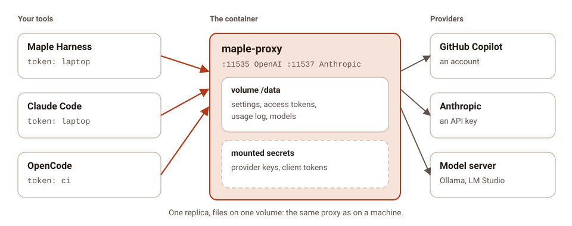
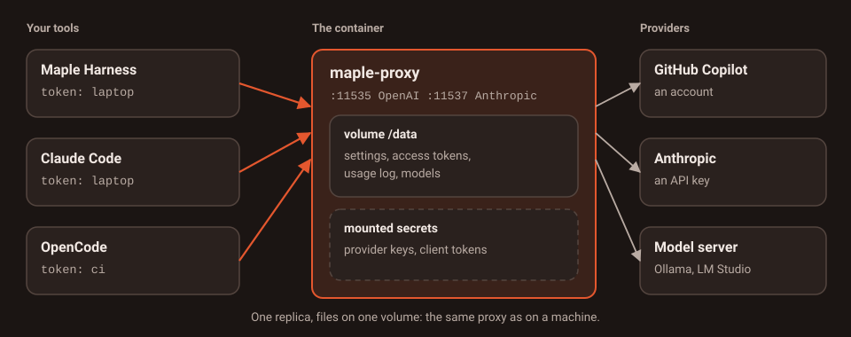

Run the proxy in Docker #
On this page
This page runs maple-proxy in a container: one container with everything it keeps on one volume, and, when one is
not enough, three replicas sharing PostgreSQL and Redis behind a load balancer. The files it uses are samples in the
infra/ folder of the public repository: copy them
and change what you need.
On your own machine you do not need any of this. The proxy installs as one program and runs as a background service. A container helps when the proxy runs on a server, next to other services, or for a team. To choose between one container, several replicas and the other setups, see Which setup do I need?.
In plain words #
- What it is. The proxy in a container, built from a release you can check, for a server or a team.
- Why you want it. It runs next to your other services, keeps everything on one volume, and can grow to several copies behind a load balancer.
- Do you need it? Not on your own computer: there the proxy is one program. If you do: build the image, run one container, open its setup page as usual. The steps follow.
What you get #


- The released binary, verified. No image is published: you build one from a release. The build downloads
maple-proxyfor your architecture from the release, checks it against the release'sSHA256SUMS(and, for a signed release, that file's signature against the project's release key, as the installer does), and refuses anything else. Nothing is compiled. - A small, locked-down image. One static binary and its licences on a distroless base: no shell, no package
manager, a non-root user, and a read-only root file system. Everything the proxy writes goes under
/data. - Configured from the environment. Listen addresses, the config path, logs and secrets come from variables and mounted files, so the same image serves a container and a Kubernetes pod.
- A health check, a clean stop and JSON logs.
maple-proxy healthcheckis the image'sHEALTHCHECK; a stop finishes running requests first; logs are one JSON object per line on standard output.
The Apple on-device model is macOS only: it is not available in a container.
Step 1: build the image #
You need Docker with Buildx. Get the samples and build, naming a published release:
git clone --depth 1 https://github.com/kinncj/maple-harness-dist.git
cd maple-harness-dist/infra/docker
docker buildx build --build-arg MAPLE_VERSION=v2.0.0 -t maple-proxy:2.0.0 --load .For several architectures, pushed to your own registry:
docker buildx build --build-arg MAPLE_VERSION=v2.0.0 \
--platform linux/amd64,linux/arm64 \
-t registry.example.com/you/maple-proxy:2.0.0 --push .MAPLE_VERSION is required, so an image is always one known release. If a checksum or the signature does not
match, the build stops with the reason and no image is made. For builds that come out the same every time, pin the
two base images in the Dockerfile by digest.
Step 2: run one container #
Make a token for your tools, then start it with the sample compose.yaml:
mkdir -p secrets
printf 'laptop=%s\n' "$(openssl rand -hex 24)" > secrets/proxy_tokens
MAPLE_VERSION=v2.0.0 docker compose up -dEach line of secrets/proxy_tokens is label=value. The proxy adds each one as an access token with the proxy
scope at start (once: a token already there is left as it is). Your tools then use it with mh_ in front:
export OPENAI_BASE_URL=http://127.0.0.1:11535/v1
export OPENAI_API_KEY="mh_$(cut -d= -f2 secrets/proxy_tokens)"Maple Harness on the same machine cannot verify a proxy in a container (it does not share your settings folder), so
connect to it with the token, the same way, with mh_ in front:
export MAPLE_PROXY_TOKEN="mh_$(cut -d= -f2 secrets/proxy_tokens)"
maple-harness proxy connect --token-env MAPLE_PROXY_TOKEN http://127.0.0.1:11535For a CI job, see CI jobs and containers.
The ports are published on 127.0.0.1 only. To reach the proxy from other machines, publish them on an address of
your network and put it behind HTTPS (see Security).
Without Compose, the same thing:
docker volume create maple-data
docker run -d --name maple-proxy --read-only --cap-drop ALL --security-opt no-new-privileges \
--tmpfs /tmp -v maple-data:/data \
-v "$PWD/secrets/proxy_tokens:/run/secrets/maple/access.proxy_tokens:ro" \
-p 127.0.0.1:11535:11535 -p 127.0.0.1:11537:11537 \
maple-proxy:2.0.0What a start looks like #
These lines are from a real start of the binary in a sandbox set up like the container (on other ports; a few lines left out):
$ docker logs maple-proxy
{"time":"2026-10-09T03:14:25.676Z","level":"INFO","msg":"no config found at /data/config/maple-harness/config.yaml — created a starter config","component":"proxy"}
{"time":"2026-10-09T03:14:25.676Z","level":"INFO","msg":"starting maple-proxy 2.0.0 (87a4a90d29df) go1.27.0-X:nodwarf5 linux/amd64 built 2026-10-08T15:30:37Z storage=disk gomaxprocs=4","storage":"disk","component":"proxy"}
{"time":"2026-10-09T03:14:25.676Z","level":"INFO","msg":"secrets are kept in /run/secrets/maple and MAPLE_SECRET_* variables (read-only), else /data/config/maple-harness/secrets.json (chosen with MAPLE_SECRETS_BACKEND)","storage":"disk","component":"proxy"}
{"time":"2026-10-09T03:14:25.676Z","level":"INFO","msg":"1 access token(s) added from the mounted secrets","storage":"disk","component":"proxy"}
{"time":"2026-10-09T03:14:25.677Z","level":"INFO","msg":"OpenAI-compatible surface listening on 127.0.0.1:23535","storage":"disk","component":"proxy"}
$ docker exec maple-proxy maple-proxy healthcheck
healthySettings and providers #
The proxy keeps config.yaml on the volume, at /data/config/maple-harness/config.yaml, and makes a starter one the
first time. Provider keys belong in secrets, never in the image or in config.yaml:
- mount each secret as a file in
/run/secrets/maple/, named after the secret with/written as.: the key of the provideropenaiisprovider/openai/api_key, so the file isprovider.openai.api_key; - or set it as a variable:
MAPLE_SECRET_PROVIDER_OPENAI_API_KEY; - and refer to it in
config.yamlas${secret:provider/openai/api_key}.
A mounted secret is read-only: changing it on the setup page is refused with a note saying where it comes from.
To edit config.yaml, copy it out and back (docker cp), or run the CLI inside the container:
docker exec maple-proxy maple-proxy secrets status
docker exec maple-proxy maple-proxy usage statusThe setup page is served only on the container's own loopback address, as on a machine: it manages credentials and
tokens, so it is never reachable from the network. On Linux, --network host makes it reachable from the host's
browser at http://127.0.0.1:11539; otherwise, use config.yaml and the CLI.
Health checks and stopping #
GET /healthzanswersokwhile the proxy runs;GET /readyzanswersokonce providers are loaded (and, with shared storage, while PostgreSQL and Redis answer), andnot readyotherwise. They say nothing more: no version, no reason. They answer without a token, only forGET, behind the same host-name checks as the rest.maple-proxy healthcheckasks/readyzof the proxy in the same container and exits 0 or 1 (--liveasks/healthz). The image uses it as itsHEALTHCHECK.- A stop (
docker stop, SIGTERM) first turns/readyztonot readyforMAPLE_DRAIN_DELAY(5 seconds in a container), so a load balancer stops sending new requests, then stops taking connections and waits up toMAPLE_SHUTDOWN_GRACE(10 minutes in a container) for running requests, streams included, to finish. Give Docker as long:stop_grace_periodin Compose,--stop-timeoutwithdocker run. - During a long silence (a model thinking), a stream gets a keep-alive every 15 seconds, so a proxy or load balancer
in between does not close it: an SSE comment on the OpenAI surface, a
pingevent on the Anthropic one. Clients ignore both.MAPLE_SSE_KEEPALIVEchanges the interval (0turns it off).
Logs #
In the container, logs are JSON on standard output, one object per line:
| Field | What it is |
|---|---|
time | When, in UTC (RFC 3339, milliseconds) |
level | DEBUG, INFO, WARN or ERROR |
msg | What happened |
component | proxy, access (one line per request), usage, events, health, chain or mcp-hub |
storage, proxy_id, proxy_instance | How this proxy keeps its state, and which replica wrote the line |
A request line (component: access) also has surface, method, path, status, duration_ms, requested (the
name asked for), model and provider (what answered), person and team when people are set up,
token (the access token's label, never the token), request_id (the same on every proxy a request passes
through), input_tokens, output_tokens, stream and cache. Health probes are left out.
Prompts and answers are never written to these logs, and anything shaped like a key or a token is written as
[redacted].
| Setting | Values |
|---|---|
log.format or MAPLE_ | text (the default on a machine) or json (the default in the image) |
log.level or MAPLE_ | debug, info (the default), warn or error |
log. or MAPLE_ | on also writes each usage record and event as a JSON line on standard output (component: usage or events, with the record's fields under usage or event), for a log stack to collect; JSON even when log.format is text. Usage lines are info, events keep their own level. Off by default; read when the proxy starts |
Errors and everything else go to standard output alike, so docker logs shows them in order. To ship them, any
collector that reads container logs works. With Vector:
[sources.maple]
type = "docker_logs"
include_containers = ["maple-proxy"]
[transforms.parse]
type = "remap"
inputs = ["maple"]
source = ". = parse_json!(.message)"
[sinks.out]
type = "loki"
inputs = ["parse"]
endpoint = "http://loki.example:3100"
labels = { component = "{{ component }}", replica = "{{ proxy_instance }}" }Images and memory #
Resizing an image (image_resize_tool, image_resize_user) decodes it in memory, about width × height × 4 bytes,
and as much again for the result. In a container the proxy keeps this inside a share of the container's memory
limit, so a burst of large screenshots cannot run it out of memory:
images.resize_memory(orMAPLE_IMAGES_RESIZE_MEMORY): how much memory resizes may take at once, a share of the limit (25%, the default) or a size (256MiB). A resize waits for room, up to 30 seconds; as many run at once as the container has CPUs;images.max_pixels(orMAPLE_IMAGES_MAX_PIXELS): the largest image decoded at all; by default what that memory allows, at most 50 megapixels.
An image too large for the limit is sent on as it came, and the X-Maple-Images header says so. The proxy also sets
Go's memory limit (GOMEMLIMIT) to 90% of the container's limit, unless you set it; the start line shows both. On a
machine, none of this applies: images are resized as always.
Search by meaning #
The built-in models for search by meaning are downloaded the way they always are (the setup
page, or docker exec maple-proxy maple-proxy embeddings install), into /data/config/maple-harness/embeddings/ on
the volume, so a download survives restarts and upgrades. MAPLE_EMBEDDINGS_DIR puts them on a volume of their
own. Two proxies sharing one models folder never download the same model twice at once: the second waits and uses
the first one's download, which is checked against its pinned checksums before it is moved into place. By
downloading a model you accept its licence, shown by embeddings list.
Several replicas #
When one proxy is not enough, or a restart must not interrupt anyone, run three replicas behind a load balancer (Caddy), sharing PostgreSQL and Redis. The Kubernetes page explains what they share and how they behave; the same applies here. There are two samples:
| Sample | Settings | Use it when |
|---|---|---|
compose.ha-shared.yaml (recommended) | Your config.yaml is copied into PostgreSQL once; after that every proxy runs the copy in PostgreSQL, changed on any proxy's setup page | You want one set of settings, changed on the page, with no drift |
compose.ha.yaml | The same as in 2.1: the settings are shared through PostgreSQL, starting from each proxy's default settings | You already run it; it keeps working as before |
compose.ha-redis.yaml | No PostgreSQL: one Redis that keeps its data (an append-only file, noeviction, a volume) holds everything, settings included (storage mode redis, 2.3) | Running PostgreSQL is the harder part for you, and you back up Redis's volume. Supported; PostgreSQL and Redis together stay the recommendation |
mkdir -p secrets
printf 'laptop=%s\n' "$(openssl rand -hex 24)" > secrets/proxy_tokens
openssl rand -hex 32 > secrets/storage_key
openssl rand -hex 24 > secrets/postgres_password
printf 'postgres://maple:%s@postgres:5432/maple?sslmode=disable' "$(cat secrets/postgres_password)" > secrets/postgres_dsn
openssl rand -hex 24 > secrets/redis_password
printf 'redis://:%s@redis:6379/0' "$(cat secrets/redis_password)" > secrets/redis_url
cp /path/to/your/config.yaml config.yaml # the settings to start from
MAPLE_VERSION=v2.2.0 docker compose -f compose.ha-shared.yaml up -dClients use http://127.0.0.1:8080/v1 (OpenAI) or http://127.0.0.1:8081 (Anthropic).
Without PostgreSQL (compose.ha-redis.yaml): the same steps without the two PostgreSQL lines, with the Redis
address naming the user maple (printf 'redis://maple:%s@redis:6379/0' ..., as the file's comment shows), then
docker compose -f compose.ha-redis.yaml up -d. Its Redis runs with --appendonly yes --appendfsync everysec
--maxmemory-policy noeviction on the redis-data volume, the proxies sign in as a user that cannot run FLUSHALL,
CONFIG or other dangerous commands (whoever can write this Redis controls budgets and usage), and each proxy keeps its own data folder on a volume
(proxy-1-data and so on), where it remembers the newest settings version it accepted and the Redis store it runs
on. A proxy refuses to start on a Redis without those settings and says why in its log (docker compose logs
proxy-1); what each message means.
With clients on other machines, give the load balancer a fixed address and set MAPLE_TRUSTED_PROXIES to it (the
file has the line, commented out): the proxies then count each client's wrong tokens on their own, instead of refusing every
client behind the balancer after one client's mistakes. See
Load balancing.
Run several replicas: how settings reach every replica #
In plain words. The three proxies must run the same settings and accept the same tokens. Both samples keep them
in PostgreSQL (MAPLE_SETTINGS_SOURCE): change a setting on any proxy's setup page and all three run it within
seconds. Every replica runs the same configuration: one that cannot confirm it is current reports itself not
ready until it is (docker compose ps shows it unhealthy). Settings from a file, read-only on the page, are the
other choice; it suits Kubernetes and its ConfigMaps better, and the
comparison and steps are on the Kubernetes
page.
Technical. The guarantees (the checks every 2 seconds, not ready after about 8 seconds without confirming, saves refused when PostgreSQL is away or another proxy saved first, the first start, replicas that disagree) are described on the Kubernetes page, under how settings reach every replica; they are the same here. In short:
- with
compose.ha-shared.yaml, the first proxy to start with no settings in PostgreSQL copies yourconfig.yaml(mounted at/etc/maple/config.yaml,MAPLE_SETTINGS_SEED) into it, once, and says so in its log; later edits to that file are not read; MAPLE_READY_REQUIRES_SAME_CONFIG: "true"(set in both samples) reports replicas whose settings differ, which should never happen with settings in PostgreSQL.
To copy your config.yaml into PostgreSQL again later (after editing it), or to get the settings back as a file:
docker compose -f compose.ha-shared.yaml exec proxy-1 maple-proxy storage import-config --from /etc/maple/config.yaml
docker compose -f compose.ha-shared.yaml exec proxy-1 maple-proxy storage export-config > config.yamlimport-config refuses to replace a different copy already in PostgreSQL unless you add --force, refuses keys
written into config.yaml (keep them in the secret store), and prints what it did; every proxy applies it within
seconds.
Moving from compose.ha.yaml. Export what runs now (storage export-config > config.yaml, with
compose.ha.yaml), stop it, and start compose.ha-shared.yaml with the same volumes: PostgreSQL already holds the
settings, so they are kept as they are.
The MCP hub in a container #
The image has no sandbox, so the MCP hub refuses to start a stdio server (a program it would run)
there. Run each MCP server as a container of its own that serves MCP over HTTP, and add it to the hub by URL; see
The MCP hub on the Kubernetes page for the pattern and the
mcp_hub.allow_uncontained_stdio setting that overrides this, with its risk.
Upgrading and backups #
- One container: build the new release's image and start it on the same volume. Back up the volume (stop the
container, or copy
/datawhile it runs: the files are written whole). - Several replicas: see Upgrades and Backups. Back up
PostgreSQL (it holds the settings too); Redis holds nothing that must survive. Without PostgreSQL
(
compose.ha-redis.yaml), Redis holds everything: back up theredis-datavolume (itsappendonlydir).
Read next: Kubernetes, Security, Proxy settings.